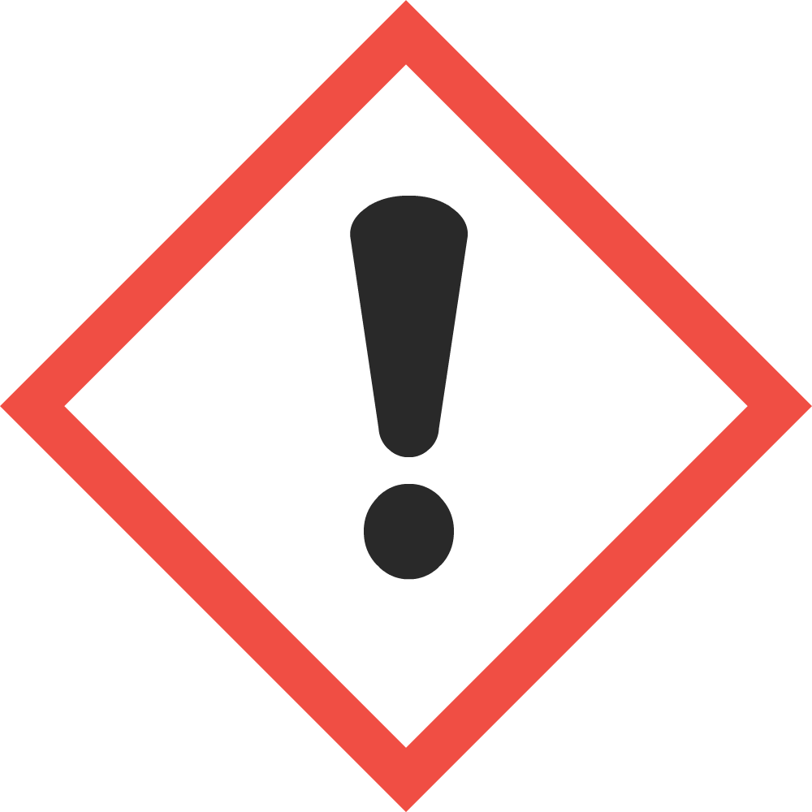
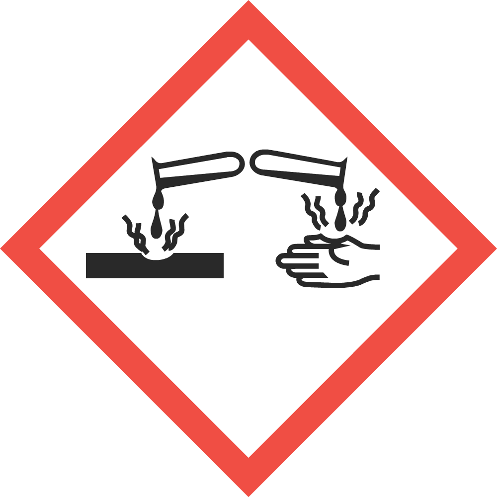
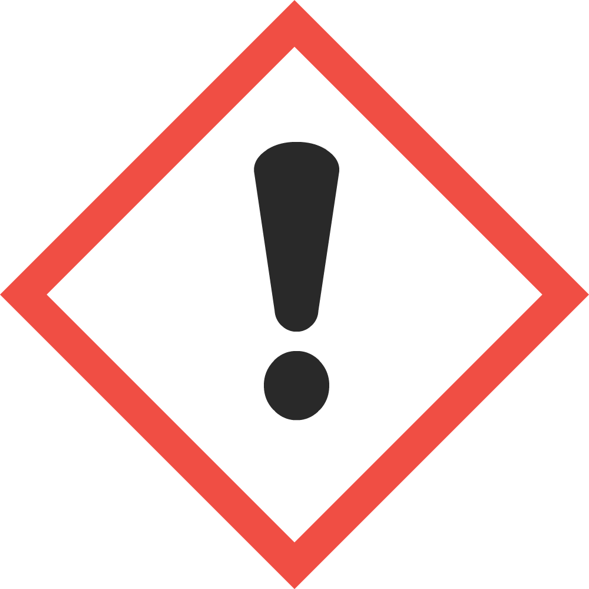
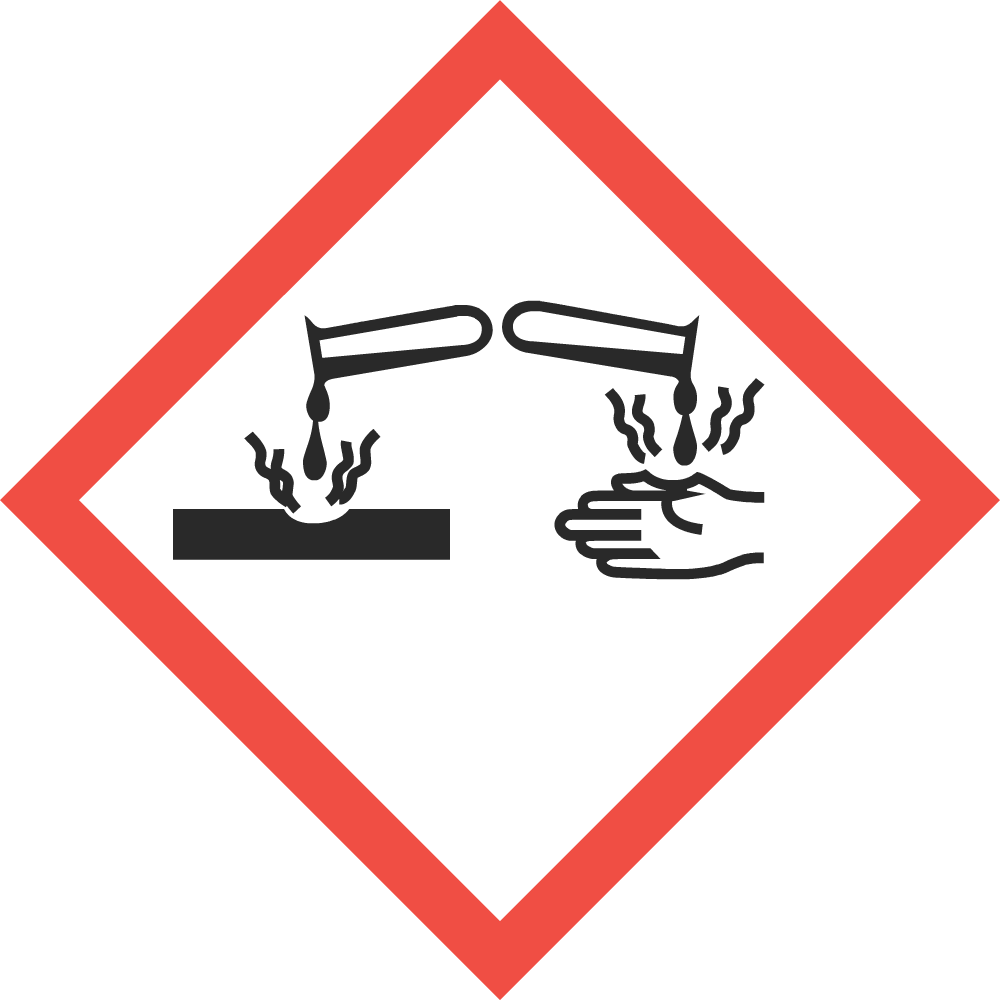

FICHE DE DONNÉES DE SÉCURITÉ
SECTION 1 - IDENTIFICATION
Identificateur du produit utilisé sur l'étiquette : Speedy Sanitizer
D'autres moyens d'identification : SS512
Utilisation recommandée du produit chimique et restrictions : Pour utilisation professionnelle seulement.
Fabricant/Fournisseur : Acme Industries
Adresse : 123 Memory Lane, Ottawa, ON T6A3Y5
No. de téléphone : (613)123-4567 Téléc. : (613)123-5678
No. d'urgence (24 h) : Info 1-800-123-4567 (Amérique du Nord), 001-1-613-123-4567 (International)
D'autres moyens d'identification : SS512
Utilisation recommandée du produit chimique et restrictions : Pour utilisation professionnelle seulement.
Fabricant/Fournisseur : Acme Industries
Adresse : 123 Memory Lane, Ottawa, ON T6A3Y5
No. de téléphone : (613)123-4567 Téléc. : (613)123-5678
No. d'urgence (24 h) : Info 1-800-123-4567 (Amérique du Nord), 001-1-613-123-4567 (International)
SECTION 2 – IDENTIFICATION DES DANGERS
Classification du produit chimique :
Dommage grave aux yeux :Catégorie 1
Irritation de la peau :Catégorie 2
Éléments de l'étiquette :Irritation de la peau :Catégorie 2
Mention d'avertissement : Danger
Mention(s) de danger :
Conseil(s) de prudence :
Pictogramme(s) de danger :
 
Autres dangers non-classifiés : Aucun connu
Toxicité aiguë inconnue : 0%
Mention(s) de danger :
| - | Peut causer des brûlures graves à les yeux |
| - | Provoque une irritation cutanée |
| P260 | Ne pas respirer la poussière/la fumée/les gaz/les gouttelettes/les vapeurs |
| P264 | Bien laver les surfaces exposées après la manipulation |
| P280 | Porter des gants/vêtements/lunettes/masques de protection |
| P301+330+331 | SI AVALLÉ : Rincer la bouche. Ne pas provoquer le vomissement |
| P303+361+353 | AU CONTACT AVEC LA PEAU (ou les cheveux) : Immédiatement enlever tous vêtements contaminés. Rincer la peau avec de l'eau/se doucher |
| P304+340 | SI INHALÉ : Apporter la victime au grand air, se reposer dans une position confortable pour la respiration |
| P305+351+338 | AU CONTACT AVEC LES YEUX : Rincer avec précaution pendant plusieurs minutes. Enlever les verres de contacts, le cas échéant, s'il est facile de le faire – continuer de rincer |
| P310 | Appeler immédiatement un centre antipoison ou un médecin |
| P321 | Traitement spécifique (voir section 4 de la FDS) |
| P363 | Laver les vêtements contaminés avant de les remettre |
| P405 | Garder dans un endroit enfermé |
| P501 | Jeter le contenu/le contenant selon les règles locales |
 
Autres dangers non-classifiés : Aucun connu
Toxicité aiguë inconnue : 0%
SECTION 3 - COMPOSITION/INFORMATION SUR LES INGRÉDIENTS
| Nom du produit chimique, nom commun & synonymes : | No. CAS | Concentration % |
|---|---|---|
| Chlorure d'alkyldiméthyléthylebenzylammonium (40%), Chlorure d'alkyldiméthylbenzylammonium (40%), Éthanol (9%), Amines alkyldiméthyl -C12-18 (<1.6%) | 85409-23-0, 6839101-5, 64-17-5, 68391-04-8 | 7-13 |
SECTION 4 – LES MESURES DE PREMIERS SOINS
Description des mesures de premiers soins :
Si avalé : Rincez la bouche. Ne provoquez pas le vomissement. Appelez immédiatement un centre antipoison ou un médecin.
Au contact avec la peau (ou les cheveux) : Enlevez immédiatement tous vêtements contaminés. Rincez la peau avec de l'eau/prenez une douche. Si une irritation de la peau se développe, obtenez des soins médicaux.
Si inhalé : Apportez la victime au grand air, reposez-la dans une position confortable pour la respiration. Appelez immédiatement un centre antipoison ou un médecin.
Au contact avec les yeux : : Rincez avec précaution pendant plusieurs minutes. Enlevez les verres de contacts, le cas échéant, s'il est facile de le faire. Continuez de rincer. Appelez immédiatement un médecin.
Les symptômes les plus importants et les effets (aigus et à retardement) : Peut causer des brûlures graves à la peux et endommager les yeux.
Indication de toute attention médicale immédiate et traitement spécial exigés : Traitez de façon symptomatique.
Au contact avec la peau (ou les cheveux) : Enlevez immédiatement tous vêtements contaminés. Rincez la peau avec de l'eau/prenez une douche. Si une irritation de la peau se développe, obtenez des soins médicaux.
Si inhalé : Apportez la victime au grand air, reposez-la dans une position confortable pour la respiration. Appelez immédiatement un centre antipoison ou un médecin.
Au contact avec les yeux : : Rincez avec précaution pendant plusieurs minutes. Enlevez les verres de contacts, le cas échéant, s'il est facile de le faire. Continuez de rincer. Appelez immédiatement un médecin.
Les symptômes les plus importants et les effets (aigus et à retardement) : Peut causer des brûlures graves à la peux et endommager les yeux.
Indication de toute attention médicale immédiate et traitement spécial exigés : Traitez de façon symptomatique.
SECTION 5 – MESURES À PRENDRE EN CAS D'INCENDIE
Moyens d'extinction :
Classification d'inflammabilité : ininflammable
Produits de combustion dangereux : Oxydes de carbone, oxydes de phosphore, autres composés organiques non-identifiés
Équipement de protection spécial et précautions pour les pompiers :
Moyens d'extinction appropriés : Utilisez les moyens d'extinction qui sont appropriés à la situation locale et l'environnement
Moyens d'extinction inappropriés : Indéterminés
Dangers spéciaux associés à la substance ou au mélange : Aucun connu Moyens d'extinction inappropriés : Indéterminés
Classification d'inflammabilité : ininflammable
Produits de combustion dangereux : Oxydes de carbone, oxydes de phosphore, autres composés organiques non-identifiés
Équipement de protection spécial et précautions pour les pompiers :
Équipement de protection pour les pompiers : Les pompiers devraient porter de l'équipement de protection approprié et un appareil respiratoire autonome à pression d'air avec un masque plein visage.
Procédures spéciales pour lutter contre les incendies : Enlevez les contenants des alentours du feu, s'il est sécuritaire de le faire. Refroidissez les contenants fermés qui ont été exposés au feu en les arrosant avec de l'eau. Ne permettez pas à l'écoulement résultant de la lutte contre le feu d'entrer dans les égouts ou les cours d'eau. Contrôlez l'eau avec des digues.
Procédures spéciales pour lutter contre les incendies : Enlevez les contenants des alentours du feu, s'il est sécuritaire de le faire. Refroidissez les contenants fermés qui ont été exposés au feu en les arrosant avec de l'eau. Ne permettez pas à l'écoulement résultant de la lutte contre le feu d'entrer dans les égouts ou les cours d'eau. Contrôlez l'eau avec des digues.
SECTION 6 – MESURES À PRENDRE EN CAS DE DÉVERSEMENT ACCIDENTEL
Précautions personnelles, équipement de protection et procédures d'urgence : Toute personne s'occupant du nettoyage devrait porter l'équipement de protection chimique approprié. Gardez les gens loin et en amont du déversement/fuite. Limitez l'accès à la zone jusqu'à la complétion du nettoyage. Consultez les listes de mesures protectrices dans les sections 7 et 8.
Méthodes et matières utilisées pour l'endiguement et le nettoyage : Ne permettez pas aux matières utilisées pour l'endiguement et le nettoyage de contaminer la nappe phréatique. Si nécessaire, endiguez un endroit bien en avant du déversement afin de prévenir un écoulement dans les canalisations, les égouts, les cours d'eau naturels ou les sources d'eau potable. Ventilez l'endroit. Tentez de prévenir des déversements ou des fuites additionnels, si ce n'est pas trop dangereux de le faire. Absorbez le déversement avec une matière absorbante inerte. N'utilisez pas d'absorbants combustibles, tels que du brin de scie. Ramassez et placez le tout dans des contenants correctement étiquetés. La matière absorbante contaminée peut poser les mêmes dangers que le produit déversé. Contactez les autorités locales appropriées.
Méthodes et matières utilisées pour l'endiguement et le nettoyage : Ne permettez pas aux matières utilisées pour l'endiguement et le nettoyage de contaminer la nappe phréatique. Si nécessaire, endiguez un endroit bien en avant du déversement afin de prévenir un écoulement dans les canalisations, les égouts, les cours d'eau naturels ou les sources d'eau potable. Ventilez l'endroit. Tentez de prévenir des déversements ou des fuites additionnels, si ce n'est pas trop dangereux de le faire. Absorbez le déversement avec une matière absorbante inerte. N'utilisez pas d'absorbants combustibles, tels que du brin de scie. Ramassez et placez le tout dans des contenants correctement étiquetés. La matière absorbante contaminée peut poser les mêmes dangers que le produit déversé. Contactez les autorités locales appropriées.
SECTION 7 – MANUTENTION ET STOCKAGE
Précautions pour la manutention sécuritaire : Manipulez le produit conformément à une bonne hygiène industrielle et un usage sécuritaire. Utilisez l'équipement de protection recommandé dans la section 8. Évitez le contact avec la peau, les yeux ou les vêtements. Ne respirez pas la poussière/la fumée/les gaz/les gouttelettes/les vapeurs. Suite à la manipulation, lavez complétement le visage, les mains, et toute peau exposée.
Conditions pour l'entreposage sécuritaire : Gardez le contenant bien fermé et rangez-le dans un endroit frais, sec et bien ventilé. Gardez le produit dans un endroit enfermé, hors de la portée des enfants.
Matières incompatibles : Agents oxydants. Ne pas mélanger avec d'autres produits chimiques ou nettoyants.
Conditions pour l'entreposage sécuritaire : Gardez le contenant bien fermé et rangez-le dans un endroit frais, sec et bien ventilé. Gardez le produit dans un endroit enfermé, hors de la portée des enfants.
Matières incompatibles : Agents oxydants. Ne pas mélanger avec d'autres produits chimiques ou nettoyants.
SECTION 8 – CONTRÔLES DE L'EXPOSITION ET PROTECTION INDIVIDUELLE
Limites d'exposition :
Contrôles d'exposition :
| PEL d'OSHA | |||||
|---|---|---|---|---|---|
| Nom du produit chimique | No. CAS | TWA | LECT | PEL | LECT |
| Chlorure d'alkyldiméthyléthylebenzylammonium (40%), Chlorure d'alkyldiméthylbenzylammonium (40%), Éthanol (9%), Amines alkyldiméthyl -C12-18 (<1.6%) | 85409-23-0,68391-01-5, 64-175, 68391-04-8 | 1000 ppm (Éthanol) | 1000 ppm (Éthanol) | ||
Ventilation et mesures techniques : N'utilisez le produit que dans des endroits bien-ventilés. Employez les mesures techniques appropriées afin de se conformer aux limites d'exposition professionnelles. Lorsque raisonnablement réalisable, on devrait accomplir ceci en utilisant un bon système local de ventilation et d'extraction général. En cas de ventilation insuffisante, portez de l'équipement respiratoire approprié.
Protection respiratoire : Si les concentrations dans l'air sont supérieures à la limite d'exposition admissible ou sont inconnues, utilisez des respirateurs approuvés par le NIOSH. Les respirateurs devraient être choisis selon la forme et la concentration des contaminants dans l'air, conformément à l'OSHA (29 CFR 1910.134). Consultez des spécialistes de la protection respiratoire.
Protection de la peau : Portez des gants de protection. Lorsqu'une exposition importante au produit est possible, utilisez une combinaison longue, un tablier et des bottes afin de prévenir le contact. On devrait discuter de la pertinence pour un milieu de travail spécifique avec les fabricants des systèmes de protection.
Protection des yeux et du visage : Portez de l'équipement de protection pour les yeux et le visage. Lorsqu'il est approprié, portez des lunettes de sécurité moulantes ou avec de la protection sur les côtés.
Autre équipement de protection : Assurez-vous que les douches oculaires et les douches d'urgence soient situées près des postes de travail. On pourrait exiger d'autre équipement, dépendant des normes du poste de travail.
Considérations pour l'hygiène générale : Ne respirez pas les vapeurs ou les gouttelettes. Évitez le contact avec la peau, les yeux et les vêtements. Ne mangez pas, ne buvez pas, et ne fumez pas en utilisant ce produit. Suite à la manipulation, lavez complétement les endroits exposés. Enlevez et lavez les vêtements contaminés avant de les remettre. Manipulez le produit conformément à une bonne hygiène industrielle et un usage sécuritaire.
Protection respiratoire : Si les concentrations dans l'air sont supérieures à la limite d'exposition admissible ou sont inconnues, utilisez des respirateurs approuvés par le NIOSH. Les respirateurs devraient être choisis selon la forme et la concentration des contaminants dans l'air, conformément à l'OSHA (29 CFR 1910.134). Consultez des spécialistes de la protection respiratoire.
Protection de la peau : Portez des gants de protection. Lorsqu'une exposition importante au produit est possible, utilisez une combinaison longue, un tablier et des bottes afin de prévenir le contact. On devrait discuter de la pertinence pour un milieu de travail spécifique avec les fabricants des systèmes de protection.
Protection des yeux et du visage : Portez de l'équipement de protection pour les yeux et le visage. Lorsqu'il est approprié, portez des lunettes de sécurité moulantes ou avec de la protection sur les côtés.
Autre équipement de protection : Assurez-vous que les douches oculaires et les douches d'urgence soient situées près des postes de travail. On pourrait exiger d'autre équipement, dépendant des normes du poste de travail.
Considérations pour l'hygiène générale : Ne respirez pas les vapeurs ou les gouttelettes. Évitez le contact avec la peau, les yeux et les vêtements. Ne mangez pas, ne buvez pas, et ne fumez pas en utilisant ce produit. Suite à la manipulation, lavez complétement les endroits exposés. Enlevez et lavez les vêtements contaminés avant de les remettre. Manipulez le produit conformément à une bonne hygiène industrielle et un usage sécuritaire.
SECTION 9 – PROPRIÉTÉS PHYSIQUES ET CHIMIQUES
|
Apparence : Liquide claire et incolore Odeur : Douce Seuil olfactif : Pas d'information applicable disponible pH: 7-8 Point de fusion/point de congélation : Pas d'information applicable disponible Point initial d'ébullition/domaine d'ébullition : 100 C Point d'éclair : Aucun pour l'ébullition Point d'éclair (Méthode) : Pas d'information applicable disponible Taux d'évaporation (BuAe = 1) : Semblable à l'eau Inflammabilité (solide, gaz) : Ininflammable Limites inférieures d'inflammabilité (% par vol.) : Ininflammable Limites supérieures d'inflammabilité (% par vol.) : Ininflammable |
Tension de vapeur : Pas d'information applicable disponible Densité de vapeur : Pas d'information applicable disponible Densité relative : 1.0 Solubilité : Soluble D'autres solubilité(s) : Pas d'information applicable disponible Coefficient de partage : Pas d'information applicable disponible Température d'auto-inflammation : Pas d'information applicable disponible Température de décomposition : Pas d'information applicable disponible Viscosité : Eau faible Composés organiques volatils (% COV) : 11 g/L D'autres commentaires physiques/chimiques : Pas d'information |
SECTION 10 – STABILITÉ ET RÉACTIVITÉ
Réactivité : Généralement pas réactive
Stabilité chimique : Stable
Risque de réactions dangereuses : Pas de polymérisation dangereuse
Conditions à éviter : Garder hors de la portée des enfants. Ne pas utiliser dans des endroits sans ventilation adéquate. Éviter le contact avec les matières incompatibles.
Matières incompatibles : Agents oxydants.
Produits de décomposition dangereux : Aucun connu. Consulter les « Produits de combustion dangereux » dans la Section 5.
Stabilité chimique : Stable
Risque de réactions dangereuses : Pas de polymérisation dangereuse
Conditions à éviter : Garder hors de la portée des enfants. Ne pas utiliser dans des endroits sans ventilation adéquate. Éviter le contact avec les matières incompatibles.
Matières incompatibles : Agents oxydants.
Produits de décomposition dangereux : Aucun connu. Consulter les « Produits de combustion dangereux » dans la Section 5.
SECTION 11 – DONNÉES TOXICOLOGIQUES
Renseignements sur les voies d'exposition probables :
Consultez le tableau suivant pour les données concernant la toxicité aigüe des ingrédients individuels.
* Cellules vides = pas d'information applicable disponible
Autres dangers toxicologiques importants : Aucun rapporté
Voies de pénétration dans l'organisme – L'inhalation : Éviter de respirer les vapeurs ou les gouttelettes
Voies de pénétration dans l'organisme – La peau & les yeux : Éviter le contact avec la peau ou les yeux
Voies de pénétration dans l'organisme – L'ingestion : Ne pas gouter ou avaler
Les effets potentiels sur la santé :Voies de pénétration dans l'organisme – La peau & les yeux : Éviter le contact avec la peau ou les yeux
Voies de pénétration dans l'organisme – L'ingestion : Ne pas gouter ou avaler
Indications et symptômes d'une exposition à courte durée (aigüe) :
Les effets chroniques potentiels sur la santé :
Symptômes : Consulter la section 4 de cette FDS pour voir les symptômes
Mutagénicité : N'est pas soupçonné d'être mutagénique pour les humains
Cancérogénicité : Ce produit contient de l'éthanol qui est connu comme étant cancérogène lorsque consommé oralement; mais il n'y a pas de preuves suggérant que l'éthanol est cancérogène tel qu'utilisé dans ce produit
Effets sur la reproduction : Pas d'information applicable disponible
Sensibilisation à la matière : Pas d'information applicable disponible
Effets spécifiques sur les organes cibles : Pas d'information disponible pour indiquer que le produit ou ses composants auront des effets spécifiques sur des organes cibles
Conditions médicales aggravées par une surexposition : Conditions préexistantes de la peau, des yeux ou de la respiration
Données toxicologiques :Cancérogénicité : Ce produit contient de l'éthanol qui est connu comme étant cancérogène lorsque consommé oralement; mais il n'y a pas de preuves suggérant que l'éthanol est cancérogène tel qu'utilisé dans ce produit
Effets sur la reproduction : Pas d'information applicable disponible
Sensibilisation à la matière : Pas d'information applicable disponible
Effets spécifiques sur les organes cibles : Pas d'information disponible pour indiquer que le produit ou ses composants auront des effets spécifiques sur des organes cibles
Conditions médicales aggravées par une surexposition : Conditions préexistantes de la peau, des yeux ou de la respiration
Consultez le tableau suivant pour les données concernant la toxicité aigüe des ingrédients individuels.
| Nom du produit chimique | No. CAS | DL50 (Orale, rat) | DL50 (Derm. Lapin) | CL50 (4h, Inhal., rat) |
|---|---|---|---|---|
| Chlorure d'alkyldiméthyléthylebenzylammonium (40%), Chlorure d'alkyldiméthylbenzylammonium (40%), Éthanol (9%), Amines alkyldiméthyl -C12-18 (<1.6%) | 85409-23-0, 68391-01-5, 64-17-5, 68391-048 | 501 |
Autres dangers toxicologiques importants : Aucun rapporté
SECTION 12 – DONNÉES ÉCOLOGIQUES
Écotoxicologie : Pas d'information applicable disponible
Persistance et dégradation : Pas d'information applicable disponible
Potentiel de bioaccumulation : Pas d'information applicable disponible
Mobilité dans le sol : Pas d'information applicable disponible
Autres effets nocifs pour l'environnement : Pas d'information applicable disponible
Persistance et dégradation : Pas d'information applicable disponible
Potentiel de bioaccumulation : Pas d'information applicable disponible
Mobilité dans le sol : Pas d'information applicable disponible
Autres effets nocifs pour l'environnement : Pas d'information applicable disponible
SECTION 13 – DONNÉES SUR L'ÉLIMINATION
Manipulation pour le traitement : Manipulez le produit conformément à une bonne hygiène industrielle et un usage sécuritaire. Consultez les mesures de protection listées dans les sections 7 et 8. Les contenants vides contiennent du résidu (liquide et/ou vapeur) et peuvent être dangereux.
Méthodes d'élimination : Traiter le produit conformément à toute réglementation applicable (fédérale, d'état, provinciale et locale). Contacter votre agence environnementale locale, d'état, provinciale ou fédérale pour obtenir les règlements spécifiques.
RCRA : Si le produit, tel que fourni, est jeté aux États-Unis, il pourrait répondre aux critères d'un déchet dangereux défini par l'ONU sous le RCRA, Title 40 CFR 261. Celui qui produit le déchet a la responsabilité de déterminer l'identification correcte du déchet ainsi que la méthode d'élimination appropriée. Pour le traitement de déchets, ou de matières non-utilisées, consulter les agences environnementales locales, d'état et fédérales.
Méthodes d'élimination : Traiter le produit conformément à toute réglementation applicable (fédérale, d'état, provinciale et locale). Contacter votre agence environnementale locale, d'état, provinciale ou fédérale pour obtenir les règlements spécifiques.
RCRA : Si le produit, tel que fourni, est jeté aux États-Unis, il pourrait répondre aux critères d'un déchet dangereux défini par l'ONU sous le RCRA, Title 40 CFR 261. Celui qui produit le déchet a la responsabilité de déterminer l'identification correcte du déchet ainsi que la méthode d'élimination appropriée. Pour le traitement de déchets, ou de matières non-utilisées, consulter les agences environnementales locales, d'état et fédérales.
SECTION 14 – INFORMATIONS RELATIVES AU TRANSPORT
Information spéciale concernant le transport : Garder à l'abri du gel
Classification T.M.D. : Non-règlementé sous le TMD
Classification D.O.T. : Non-règlementé par le D.O.T.
Classification T.M.D. : Non-règlementé sous le TMD
Classification D.O.T. : Non-règlementé par le D.O.T.
SECTION 15 – INFORMATION SUR LA RÉGLEMENTATION
Déclaration de l'EPA/Santé Canada
Ce produit chimique est enregistré par l'Environmental Protection Agency/Santé Canada et est sujet à certaines exigences légales concernant l'étiquetage. Ces exigences diffèrent des critères de classification et de l'information sur les dangers requis pour les fiches de données de sécurité et les étiquettes du lieu de travail pour les produits chimiques non-pesticides. Pour plus d'information, consulter l'étiquette du produit.
Ce produit chimique est enregistré par l'Environmental Protection Agency/Santé Canada et est sujet à certaines exigences légales concernant l'étiquetage. Ces exigences diffèrent des critères de classification et de l'information sur les dangers requis pour les fiches de données de sécurité et les étiquettes du lieu de travail pour les produits chimiques non-pesticides. Pour plus d'information, consulter l'étiquette du produit.
SECTION 16 - AUTRES INFORMATIONS
Date de révision: 1er décembre 2018
Légende :
CAS: Chemical AbstractServices
CFR: Code of Federal Regulations
CSA: CanadianStandardsAssociation
DOT: Department of Transportation
EPA: Environmental Protection Agency
LC: Lethal Concentration
LD: Lethal Dose
OSHA: Occupational Safety and Health Administration
PEL: Permissible exposure limit
RCRA: Resource Conservation and Recovery Act
SDS: Safety Data Sheet Material Safety Data Sheet
STEL: Short Term Exposure Limit
TDG: Canadian Transportation of Dangerous Goods Act & Regulations
TLV: Threshold Limit Values
TWA: Time Weighted Average
CFR: Code of Federal Regulations
CSA: CanadianStandardsAssociation
DOT: Department of Transportation
EPA: Environmental Protection Agency
LC: Lethal Concentration
LD: Lethal Dose
OSHA: Occupational Safety and Health Administration
PEL: Permissible exposure limit
RCRA: Resource Conservation and Recovery Act
SDS: Safety Data Sheet Material Safety Data Sheet
STEL: Short Term Exposure Limit
TDG: Canadian Transportation of Dangerous Goods Act & Regulations
TLV: Threshold Limit Values
TWA: Time Weighted Average
Prepared By: Acme Industries
Tel: (613)-123-4567